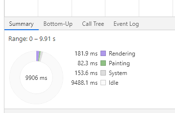
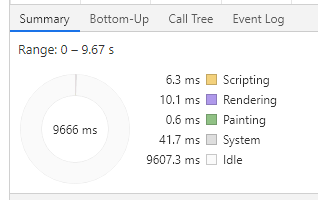
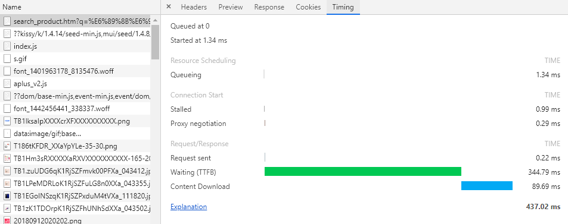
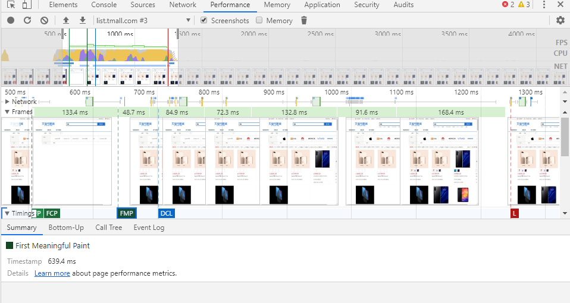

一、文件加载
雅虎军规
雅虎军规,一个老牌的前端优化指南，其中有好些点现在也还在延用，这里只枚举其中几点。
1. 合并压缩资源成一个文件。将一个页面中的css和js文件分别合并以及使用雪碧图，尽量江绍http请求。
2. 使用 CDN。浏览器对相同域名的请求有并发数限制，使用 CND 可以让浏览器从不同的域名发请求，可并发数增加。其次，向 CDN 请求静态资源时，请求头不会带上只有主域名才需要的 cookie 浪费带宽。但是 CDN 设置过多的话，会浪费 DNS 的时间，CDN 的数量一般为 2-4 个。
3. 设置缓存和 Gzip。对长时间不修改的库、静态资源乃至 ajax，都可以设置 Expires 或者Cache-Control HTTP 头，点击查看更多缓存相关细节。设置 Gzip 能有效压缩文本文件。
4. 样式表放上面，脚本放下面。css 中存在页面渲染所需要的内容，为了让页面尽快渲染完成，不要将 css 放在页面的底部。js 脚本的下载会阻塞页面的渲染，因为浏览器不知道 js 中是否会操作 dom 元素，其次，浏览器在下载 js 的时候，不会并行其他资源的下载。
5. 减少 Dom 的数量、事件、和对 Dom 的访问。一个页面的 Dom 数不能过多，淘宝首页的 Dom 数为 1341。一个区域的绑定的事件过多，使用事件代理来处理这些事件。对访问过的 Dom 进行缓存，下次使用时就不需要再次获取。
离线缓存
将一些长时间不修改的静态资源文件缓存在 localStorage 中，可以有效减少请求，加快页面渲染。一个域的 localStorage 只有 5M。
http 的升级
http 1.1 中引入了 Connection：keep-alive 长连接，使得不必每次请求都进行 tcp 握手，很大程度上改善了网页的性能，但是也还有很多不足之处。比如请求都是串行的，若其中一个请求返回慢容易造成 http 消息头堵塞。
http 2.0 中增加了部分强大的新特性。
1. 协议传输采用二进制。
2. 协议头进行压缩，且重复的 headers 可以进行缓存。
3. 多路复用。一个连接同一时刻可以被多个流使用。这意味着连接可以同时传输多个请求的数据，所有的请求的应答可以并行。
4. 全双工通讯。服务端可以主动推送消息。
二、页面渲染
拿到html
讲到页面渲染不得不提的就是页面的渲染流程。从在浏览器中输入 url 之后，浏览器经历千辛万苦才拿到需要渲染的 html，然后浏览器开始解析 html。
解析 html
浏览器从上到下解析 html 标签，将其中的标签全部解析为 dom 树。在浏览器解析 dom 树的同时，遇到外链的 css，js，则先去下载外链的文件，并且 script 标签会阻塞 dom 树的生成。值得一提的是，js代码 会在将 js 之前的 css 加载完之后，才执行 js 代码，但是可以通过给 script 标签添加 async 属性让 js 代码加载完立即执行。在加载完所有的 css 文件后，浏览器也会获得一颗 cssom 树。
构建渲染树
通过 dom 树和 cssom 树浏览器便可以构建渲染树。浏览器会先从 dom 树的根节点开始遍历每个可见节点。对每个可见节点，找到其适配的 css 样式规则并应用。对于那些不可见的元素，比如 display:none，或者带有 hidden 属性的标签，不会在这棵树中出现了
layout
计算每个 dom 元素在最终屏幕上显示的大小和位置。网页视图像 ps 图层一样，由多个图层组成，除了基础的 dom 层外，使用 position、transform、透明、滤镜、canvas、video、BFC元素，都会进行分层。
paint
在多个层上绘制 DOM 元素的的文字、颜色、图像、边框和阴影等。为每个 dom 绘制到当前帧的图层中。
composite
将图层上传到 gpu 中，并将多个图层合并生成图像，在网页中显示。可以使用css3d、transform 来开启硬件加速，使用 gpu 来跳过 layout 和 paint 的耗时。
打开 w3school 的 animation, css 如下，以及使用 devtool 的 performance 抓 10 秒网页性能。
1 | animation:mymove 5s infinite; |

将动画中的 left 改为 translate，并使用 performance 抓 10 秒网页性能，可以看到这里已经跳过了 layout 和 paint。
1 | animation:mymove 5s infinite; |

总结：以上过程可以将外链的 js 文件置于文件底部，避免阻塞渲染。由于页面是由多个图层合并的，所以经常需要变换位置的元素可以强制提升为一个图层，可以减少重排时间。对于重要的元素可以使用硬件加速减少 layout 和 paint 的耗时。
三、页面加载
关于页面加载的有几个关键的概念：
1. TTFB（Time To First Byte） 客户端拿到第一个字节的时间。
2. FP（First Paint） 浏览器首次绘制。
3. FCP（First Contentful Paint） 浏览器首次有内容的绘制。
4. FMP（First Meaningful Paint） 浏览器首次有意义的绘制。
5. DCL（DOM Content Loaded） 浏览器首次有意义的绘制。
6. L（Loaded） 浏览器首次有意义的绘制。
7. TTI（Time To Interaction） 可交互时间。
以淘宝首页为例，以下为打开淘宝时间的各个时间段。

首页请求的 TTFB

淘宝的商品页面的性能抓取，可以点击各个时间段来查看各个阶段的耗时。并且可以通过 window 的 performance 对象打印出 FP 和 FCP 的耗时。
1 | let paint = window.performance.getEntriesByType('paint'); |
可以选择 ssr 做首屏渲染，减少首屏的请求时间，用 spa 做页面切换，增加对相同库的使用效率。